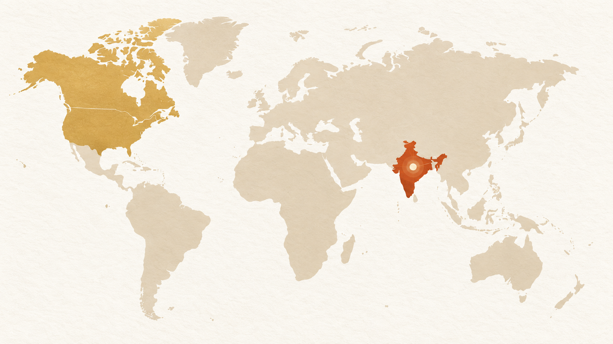

Our main hub
Delhi NCR, India
Long-standing relationships begin here and extend across key textile markets and customer communities.
Rooted in India, HORK’s main network begins in Delhi NCR and reaches customers across Punjab, Haryana, Uttar Pradesh, Gujarat, Uttarakhand, Rajasthan and Bihar—alongside relationships in Canada, the USA, Afghanistan and Africa.

CanadaUSAAfghanistanAfricaIndia · Main hubLong-standing relationships begin here and extend across key textile markets and customer communities.
Our home market and the centre of HORK’s relationships.
Relationships shaped by a connection to Indian textiles.
Dependable communication across borders.
Customer relationships reaching another historic textile market.
Connections that carry practical, colourful textiles farther.